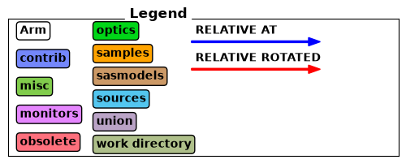
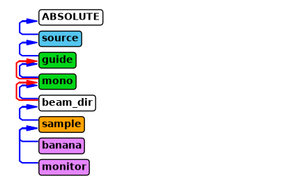
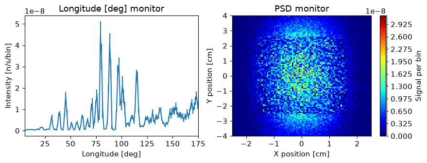
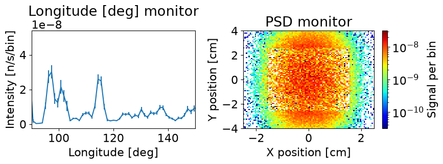

McStasScript introduction#
This notebook shows how to use McStas and McStasScript to perform a basic simulation of a neutron diffractometer. The following software is required:
McStas (www.mcstas.org)
McStasScript (can be installed with python -m pip install McStasScript)
Anatomy of a McStas instrument#
In McStas a simulation is described using an instrument file. Such an instrument has five sections where code can be added to define the simulation to be perfomed.
Instrument definition
Declare section
Initialize section
Trace section
Finally section
Instrument definition#
In the instrument definition it is possible to define instrument parameters which can be specified at run time and used in the remaining sections for either calculations or as direct input to the components.
Declare section#
Here internal variables can be declared with C syntax.
Initialize section#
The initialize section is used for performing calculations, typically using both instrument parameters and declared variables to calculate for example chopper phases, angles and similar. The calculations are performed using C syntax. These calculations are performed before the raytracing simulation, and thus only performed once in a given simulation.
Trace section#
In the trace section McStas components are added, these are the building blocks of the simulation and correspond to different c codes that describe parts of neutron instruments or samples. Each component have a set of available parameters, some of which may be required. These will set the behavior of a component, a guide component may for example have parameters describing the physical shape and mirror reflectivity. Components also need to be placed in 3D space, and can be placed either in the absolute coordinate system or relative to a previously defined component.
Finally section#
The finally section is very similar to the initialize section, here calculations can be performed after the raytracing has been completed, again using C syntax. This may be some brief data analysis or print of some status.
McStasScript python package and this tutorial#
The McStasScript python package provides an API to build and run such instruments files, but it is still necessary to have a basic understanding of the structure of the underlying instrument file and its capabilities and limitations. These tutorials will teach basic use of McStas through the McStasScript API without assuming expertise in the underlying McStas software.
Import the McStasScript package#
McStasScript needs to be imported into the users python environment, you can abbreviate the name for easier access.
import mcstasscript as ms
Create an instrument object#
A McStas instrument is described with a McStas instrument object which is created using the McStas_instr method on the instr class. Creating an instrument object also reads available components, both in the work folder and from the McStas installation. By default, the work folder is the current work directory, but using the input_path keyword argument this can be change to avoid cluttering the folder containing notebooks.
Here our instrument object for this tutorial is created, we give it the name python_tutorial.
instrument = ms.McStas_instr("python_tutorial", input_path="run_folder")
Requesting help on source components#
The main building blocks used for creating a McStas simulation are the components. One can ask an instrument object which components are available, and get help for each component. Here we check what sources are available, and ask for help on the Source_div component.
instrument.available_components()
Here are the available component categories:
contrib
misc
monitors
obsolete
optics
samples
sasmodels
sources
union
Call available_components(category_name) to display
instrument.available_components("sources")
Here are all components in the sources category.
Adapt_check Monitor_Optimizer Source_adapt Source_simple
ESS_butterfly Source_4PI Source_div
ESS_moderator Source_Maxwell_3 Source_div_quasi
Moderator Source_Optimizer Source_gen
instrument.component_help("Source_div")
___ Help Source_div ________________________________________________________________
|optional parameter|required parameter|default value|user specified value|
xwidth [m] // Width of source
yheight [m] // Height of source
focus_aw [deg] // FWHM (Gaussian) or maximal (uniform) horz. width divergence
focus_ah [deg] // FWHM (Gaussian) or maximal (uniform) vert. height divergence
E0 = 0.0 [meV] // Mean energy of neutrons.
dE = 0.0 [meV] // Energy half spread of neutrons.
lambda0 = 0.0 [Ang] // Mean wavelength of neutrons (only relevant for E0=0)
dlambda = 0.0 [Ang] // Wavelength half spread of neutrons.
gauss = 0.0 [0|1] // Criterion
flux = 1.0 [1/(s cm 2 st energy_unit)] // flux per energy unit, Angs or meV
-------------------------------------------------------------------------------------
Adding a component#
Now we are ready to add a component to our simulation which is done with the add_component method on our instrument. This method requires two inputs:
Nickname for the component used to refer to this component instance
Name of the component type to be used
Here we want to make a component nicknamed “source” of type “Source_div”.
We also use the print_components method to confirm our component was added successfully. Running this code block multiple times result in an error, as McStas does not allow two components with the same nickname.
src = instrument.add_component("source", "Source_div")
instrument.show_components()
source Source_div AT (0, 0, 0) ABSOLUTE
Working with component objects#
The src object created by add_component can be used to modify the component. It also holds the information on the component, which can be shown by printing the object. This will tell us for example if any required parameters are yet to be set and the position of the component.
print(src)
COMPONENT source = Source_div(
xwidth : Required parameter not yet specified
yheight : Required parameter not yet specified
focus_aw : Required parameter not yet specified
focus_ah : Required parameter not yet specified
)
AT (0, 0, 0) ABSOLUTE
Modifying a component object#
The parameters of a component object can be modified as attributes. From the above print we know there are four required parameters, so we start by setting these and then print the resulting component status.
src.xwidth = 0.1
src.yheight = 0.05
src.focus_aw = 1.2
src.focus_ah = 2.3
print(src)
COMPONENT source = Source_div(
xwidth = 0.1, // [m]
yheight = 0.05, // [m]
focus_aw = 1.2, // [deg]
focus_ah = 2.3 // [deg]
)
AT (0, 0, 0) ABSOLUTE
Getting status of all parameters#
Printing a component only show the required parameters and user specified parameters, but it is also possible to see all parameters with the show_parameters method. This reminds us to set an energy or wavelength range for the source, as it is necessary to set one of these even though they are technically not required parameters.
src.show_parameters()
___ Help Source_div ________________________________________________________________
|optional parameter|required parameter|default value|user specified value|
xwidth = 0.1 [m] // Width of source
yheight = 0.05 [m] // Height of source
focus_aw = 1.2 [deg] // FWHM (Gaussian) or maximal (uniform) horz. width
divergence
focus_ah = 2.3 [deg] // FWHM (Gaussian) or maximal (uniform) vert. height
divergence
E0 = 0.0 [meV] // Mean energy of neutrons.
dE = 0.0 [meV] // Energy half spread of neutrons.
lambda0 = 0.0 [Ang] // Mean wavelength of neutrons (only relevant for E0=0)
dlambda = 0.0 [Ang] // Wavelength half spread of neutrons.
gauss = 0.0 [0|1] // Criterion
flux = 1.0 [1/(s cm 2 st energy_unit)] // flux per energy unit, Angs or meV
-------------------------------------------------------------------------------------
Adding an instrument parameter to control wavelength#
Controlling the wavelength range emitted by the source is best done with an instrument parameter, then this same parameter can be used to for example rotate a monochromator or set the range for an wavelength sensitive monitor. Adding an instrument parameter is done using the instrument method add_parameter, and it is possible to set a default value and comment. The method returns a parameter object that can be used to assign the parameter to a component. The current instrument parameters can be viewed with the show_parameters method on the isntrument object.
The default type for instrument parameters is a double (floating point number), but other types can be selected if necessary by providing a type string before, here we also provide an example of an integer.
wavelength = instrument.add_parameter("wavelength", value=5.0,
comment="Wavelength in [Ang]")
order = instrument.add_parameter("int", "order", value=1,
comment="Monochromator order, integer")
instrument.show_parameters()
wavelength = 5.0 // Wavelength in [Ang]
int order = 1 // Monochromator order, integer
Now our source component can have its parameters assigned to a instrument parameter, or even a mathematical expression using the variable. This allows us to set a reasonable wavelength range for our source component.
src.lambda0 = wavelength
src.dlambda = "0.01*wavelength" # When performing math use a string and the parameter name
print(src)
COMPONENT source = Source_div(
xwidth = 0.1, // [m]
yheight = 0.05, // [m]
focus_aw = 1.2, // [deg]
focus_ah = 2.3, // [deg]
lambda0 = wavelength, // [Ang]
dlambda = 0.01*wavelength // [Ang]
)
AT (0, 0, 0) ABSOLUTE
Using keyword arguments when adding a component#
When adding a component, several keyword arguments are available, for example for setting the position of the component.
AT set position with list of x,y,z coordinates
AT_RELATIVE set reference point for position (name of component instance or object)
ROTATED set rotation around x,y,z axis
ROTATED_RELATIVE set reference rotation (name of component instance or object)
RELATIVE set both reference position and rotation (name of component instance or object)
We use this to set up a guide 2 meters after the source. The McStas coordinate system convention is such that the nominal beam direction is in the Z direction and with Y vertical against gravity. We use the component instance name as a string to refer to our source. The RELATIVE could also have been specified as src, which is our source object.
guide = instrument.add_component("guide", "Guide_gravity", AT=[0,0,2], RELATIVE="source")
Next we set the parameters for our guide component.
guide.w1 = 0.05
guide.w2 = 0.05
guide.h1 = 0.05
guide.h2 = 0.05
guide.l = 8.0
guide.m = 3.5
guide.G = -9.82
print(guide)
COMPONENT guide = Guide_gravity(
w1 = 0.05, // [m]
h1 = 0.05, // [m]
w2 = 0.05, // [m]
h2 = 0.05, // [m]
l = 8.0, // [m]
m = 3.5, // [1]
G = -9.82 // [m/s2]
)
AT (0, 0, 2) RELATIVE source
Adding calculations to an instrument file#
One of the advantages of McStas is the ease of adding calculations to the instrument. Here we calculate the rotation of a monochromator so that its scatters the wavelengths from our source. We need to declare variables using add_declare_var and append C code to initialize using append_initialize.
For add_declare_var the first argument is the C type, usually double or int, the next is the variable name. A default value can be specified with the value keyword. Like when adding a parameter, a add_declare also returns an object that can be used to refer to this variable later.
append_initialize just adds the given C code to the initialize section of the McStas instrument file. It is necessary to follow C syntax, for example remember semicolon at the end of statements.
mono_Q = instrument.add_declare_var("double", "mono_Q", value=1.714) # Q for Ge 311
instrument.add_declare_var("double", "wavevector")
instrument.append_initialize("wavevector = 2.0*PI/wavelength;")
mono_rotation = instrument.add_declare_var("double", "mono_rotation")
instrument.append_initialize("mono_rotation = asin(mono_Q/(2.0*wavevector))*RAD2DEG;")
instrument.append_initialize('printf("monochromator rotation = %g deg\\n", mono_rotation);')
Adding the monochromator#
Here the monochromator is added, and we use the declared variables mono_Q and mono_rotation prepared above. Setting position and rotation can also be done using the set_AT and set_ROTATED methods on the component objects. Here it is also demonstrated how one can use either component objects or component names for the relative keyword.
Rotation is specified around each axis, so rotation of our monochromator should be around the Y axis in order to keep the beam in the usual X-Z plane.
mono = instrument.add_component("mono", "Monochromator_flat")
mono.zwidth = 0.05
mono.yheight = 0.08
mono.Q = mono_Q
mono.set_AT([0, 0, 8.5], RELATIVE=guide)
mono.set_ROTATED([0, mono_rotation, 0], RELATIVE="guide")
print(mono)
COMPONENT mono = Monochromator_flat(
zwidth = 0.05, // [m]
yheight = 0.08, // [m]
Q = mono_Q // [1/angstrom]
)
AT (0, 0, 8.5) RELATIVE guide
ROTATED (0, 'mono_rotation', 0) RELATIVE guide
Using an arm to define the beam direction#
As the beam changes direction at the monochromator, we wish to define the new direction to simplify adding latter components. This can be done with an Arm component, which performs no simulation but can be used as new coordinate reference. The outgoing direction correspond to one more rotation of mono_rotation.
beam_direction = instrument.add_component("beam_dir", "Arm", AT_RELATIVE="mono")
beam_direction.set_ROTATED([0, mono_rotation, 0], RELATIVE="mono")
Adding a sample#
We now add a powder sample using the PowderN component placed relative to our newly defiend beam direction. The chosen powder is Na2Ca3Al2F14 which is a standard sample due to its large number of available reflections.
sample = instrument.add_component("sample", "PowderN",
AT=[0, 0, 1.1], RELATIVE=beam_direction)
sample.radius = 0.015
sample.yheight = 0.05
sample.reflections = '"Na2Ca3Al2F14.laz"'
sample.print_long()
COMPONENT sample = PowderN(
reflections = "Na2Ca3Al2F14.laz", // [string]
radius = 0.015, // [m]
yheight = 0.05 // [m]
)
AT (0, 0, 1.1) RELATIVE beam_dir
Adding a cylindrical monitor#
The flexible Monitor_nD component can be used to add a banana monitor (part of a cylinder). The component shape is specified using an option string. The restore_neutron parameter is set to 1 to allow other monitors to record each neutron.
We have to specify a filename and option string here, and if we just use a string like “banana.dat” it would be interpreted as an instrument parameter called banana.dat and fail, so it is necessary to add single quotes around, ‘“banana.dat”’.
banana = instrument.add_component("banana", "Monitor_nD", RELATIVE=sample)
banana.xwidth = 2.0
banana.yheight = 0.3
banana.restore_neutron = 1
banana.filename = '"banana.dat"'
banana.options = '"theta limits=[5 175] bins=150, banana"'
Adding a psd monitor#
We also add a simple PSD (position sensitive detector) monitor to see the transmitted beam.
mon = instrument.add_component("monitor", "PSD_monitor")
mon.nx = 100
mon.ny = 100
mon.filename = '"psd.dat"'
mon.xwidth = 0.05
mon.yheight = 0.08
mon.restore_neutron = 1
mon.set_AT([0,0,0.1], RELATIVE=sample)
Print the components contained in an instrument#
Before performing the simulation, it is a good idea to check that the instrument contains the expected components and that they are appropriately placed in space. The print_components method is useful for this purpose.
instrument.show_components()
source Source_div AT (0, 0, 0) ABSOLUTE
guide Guide_gravity AT (0, 0, 2) RELATIVE source
mono Monochromator_flat AT (0, 0, 8.5) RELATIVE guide
ROTATED (0, mono_rotation, 0) RELATIVE guide
beam_dir Arm AT (0, 0, 0) RELATIVE mono
ROTATED (0, mono_rotation, 0) RELATIVE mono
sample PowderN AT (0, 0, 1.1) RELATIVE beam_dir
banana Monitor_nD AT (0, 0, 0) RELATIVE sample
monitor PSD_monitor AT (0, 0, 0.1) RELATIVE sample
Show instrument diagram#
While show components provides a text based overview of the instrument file, the instrument diagram can provide a visual overview. The diagram shows the sequence of components and color them based on their category. Arrows show the AT and ROTATED references within the instrument.
instrument.show_diagram()


Running the simulation#
Running the simulation is done in three steps
Setting the parameters with set_parameters
Setting the settings with settings
Running the McStas simulation with backengine
The set_parameters method takes a value for each of the parameters defined in the instrument, here wavelength.
Settings adjust settings for the simulations, a few examples can be seen here
ncount sets the number of rays
mpi sets the number of CPU cores used for execution (requires mpi installed)
output_path sets the name of the output folder
increment_folder_name if set to True, automatically changes the foldername if it already exists (default).
The backengine method takes no parameters and just performs the simulation and returns the generated data.
instrument.set_parameters(wavelength=2.8)
instrument.show_parameters()
wavelength = 2.8 // Wavelength in [Ang]
int order = 1 // Monochromator order, integer
instrument.settings(ncount=5E6, output_path="data_folder/mcstas_basics")
instrument.show_settings()
Instrument settings:
ncount: 5.00e+06
output_path: data_folder/mcstas_basics
run_path: run_folder
package_path: /home/runner/micromamba/envs/mcstasscript-docs/share/mcstas/resources
executable_path: /home/runner/micromamba/envs/mcstasscript-docs/bin
executable: mcrun
force_compile: True
NeXus: False
save_comp_pars: False
data = instrument.backengine() # Perform simulation
INFO: Using directory: "/home/runner/work/McStasScript/McStasScript/docs/source/tutorial/data_folder/mcstas_basics"
INFO: Regenerating c-file: python_tutorial.c
CFLAGS= @NCRYSTALFLAGS@
WARNING:
The parameter format of sample is initialized
using a static {,,,} vector.
-> Such static vectors support literal numbers ONLY.
-> Any vector use of variables or defines must happen via a
DECLARE/INITIALIZE pointer.
-----------------------------------------------------------
Generating single GPU kernel or single CPU section layout:
-----------------------------------------------------------
Generating GPU/CPU -DFUNNEL layout:
-----------------------------------------------------------
INFO: Recompiling: ./python_tutorial.out
lto-wrapper: warning: using serial compilation of 3 LTRANS jobs
lto-wrapper: note: see the '-flto' option documentation for more information
/home/runner/micromamba/envs/mcstasscript-docs/bin/x86_64-conda-linux-gnu-ld: /tmp/ccwrSNd1.ltrans1.ltrans.o: in function `read_line_data.constprop.0':
/home/runner/work/McStasScript/McStasScript/docs/source/tutorial/run_folder/./python_tutorial.c:10833:(.text.read_line_data.constprop.0+0xea): warning: the use of `tmpnam' is dangerous, better use `mkstemp'
INFO: ===
monochromator rotation = 22.4519 deg
Opening input file '/home/runner/micromamba/envs/mcstasscript-docs/share/mcstas/resources/data/Na2Ca3Al2F14.laz' (Table_Read_Offset)
Table from file 'Na2Ca3Al2F14.laz' (block 1) is 841 x 18 (x=1:20), constant step. interpolation: linear
'# TITLE *-Na2Ca3Al2F14-[I213] Courbion, G.;Ferey, G.[1988] Standard NAC cal ...'
PowderN: sample: Reading 841 rows from Na2Ca3Al2F14.laz
PowderN: sample: Read 841 reflections from file 'Na2Ca3Al2F14.laz'
PowderN: sample: Vc=1079.1 [Angs] sigma_abs=11.7856 [barn] sigma_inc=13.6704 [barn] reflections=Na2Ca3Al2F14.laz
*** TRACE end ***
Detector: banana_I=9.9059e-07 banana_ERR=1.8903e-08 banana_N=8014 "banana.dat"
Detector: monitor_I=4.065e-05 monitor_ERR=2.69801e-07 monitor_N=49476 "psd.dat"
PowderN: sample: Info: you may highly improve the computation efficiency by using
SPLIT 47 COMPONENT sample=PowderN(...)
in the instrument description python_tutorial.instr.
INFO: Placing instr file copy python_tutorial.instr in dataset /home/runner/work/McStasScript/McStasScript/docs/source/tutorial/data_folder/mcstas_basics
INFO: Placing generated c-code copy python_tutorial.c in dataset /home/runner/work/McStasScript/McStasScript/docs/source/tutorial/data_folder/mcstas_basics
Plotting the data#
The run_full_instrument method returned a list of McStasData objects which can be plotted by the McStasScript plotter module.
ms.make_sub_plot(data)

Adjusting plots#
The McStasData objects contain preferences for how the data should be plotted, which can be modified using the functions module and the name_plot_options function. The function arguments are the name of the monitor component and a list of McStasData objects, then options are provided with the keyword arguments.
The following plot options are often useful:
log [True or False] For plotting on logarithmic axis
orders_of_mag [number] When using logarithmic plotting, limits the maximum orders of magnitudes shown
left_lim [number] lower limit of plot x axis
right_lim [number] upper limit of plot x axis
bottom_lim [number] lower limit of plot y axis
top_lim [number] upper limit of plot y axis
colormap [string] name of matplotlib colormap to use
ms.name_plot_options("monitor", data, log=True)
ms.name_plot_options("banana", data, left_lim=90, right_lim=150)
ms.make_sub_plot(data, fontsize=16, orders_of_mag=3)

Behind the scenes#
McStasScript writes the instrument file and uses mcrun to compile and run it. The file can be found in the input_path selected when the instrument object were created. We can print it here to see what was done behind the scenes.
instrument.show_instrument_file()
/********************************************************************************
*
* McStas, neutron ray-tracing package
* Copyright (C) 1997-2008, All rights reserved
* Risoe National Laboratory, Roskilde, Denmark
* Institut Laue Langevin, Grenoble, France
*
* This file was written by McStasScript, which is a
* python based McStas instrument generator written by
* Mads Bertelsen in 2019 while employed at the
* European Spallation Source Data Management and
* Software Centre
*
* Instrument: python_tutorial
*
* %Identification
* Written by: Python McStas Instrument Generator
* Date: 13:54:02 on July 24, 2026
* Origin: ESS DMSC
* %INSTRUMENT_SITE: Generated_instruments
*
* !!Please write a short instrument description (1 line) here!!
*
* %Description
* Please write a longer instrument description here!
*
*
* %Parameters
* wavelength: [unit] Wavelength in [Ang]
* order: [unit] Monochromator order, integer
*
* %Link
*
* %End
********************************************************************************/
DEFINE INSTRUMENT python_tutorial (
wavelength = 2.8, // Wavelength in [Ang]
int order = 1 // Monochromator order, integer
)
DECLARE
%{
double mono_Q = 1.714;
double wavevector;
double mono_rotation;
%}
INITIALIZE
%{
// Start of initialize for generated python_tutorial
wavevector = 2.0*PI/wavelength;
mono_rotation = asin(mono_Q/(2.0*wavevector))*RAD2DEG;
printf("monochromator rotation = %g deg\n", mono_rotation);
%}
TRACE
COMPONENT source = Source_div(
xwidth = 0.1, yheight = 0.05,
focus_aw = 1.2, focus_ah = 2.3,
lambda0 = wavelength, dlambda = 0.01*wavelength)
AT (0, 0, 0) ABSOLUTE
COMPONENT guide = Guide_gravity(
w1 = 0.05, h1 = 0.05,
w2 = 0.05, h2 = 0.05,
l = 8.0, m = 3.5,
G = -9.82)
AT (0, 0, 2) RELATIVE source
COMPONENT mono = Monochromator_flat(
zwidth = 0.05, yheight = 0.08,
Q = mono_Q)
AT (0, 0, 8.5) RELATIVE guide
ROTATED (0, mono_rotation, 0) RELATIVE guide
COMPONENT beam_dir = Arm()
AT (0, 0, 0) RELATIVE mono
ROTATED (0, mono_rotation, 0) RELATIVE mono
COMPONENT sample = PowderN(
reflections = "Na2Ca3Al2F14.laz", radius = 0.015,
yheight = 0.05)
AT (0, 0, 1.1) RELATIVE beam_dir
COMPONENT banana = Monitor_nD(
xwidth = 2.0, yheight = 0.3,
restore_neutron = 1, options = "theta limits=[5 175] bins=150, banana",
filename = "banana.dat")
AT (0, 0, 0) RELATIVE sample
COMPONENT monitor = PSD_monitor(
nx = 100, ny = 100,
filename = "psd.dat", xwidth = 0.05,
yheight = 0.08, restore_neutron = 1)
AT (0, 0, 0.1) RELATIVE sample
FINALLY
%{
// Start of finally for generated python_tutorial
%}
END